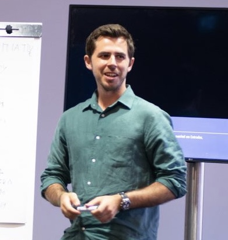

|  | João Bandeira
Currently: VC Investor at Iberis Capital
Based in Lisbon, Portugal
|
Shoe Dog, Phil Knight [Goodreads]
The Ride of a Lifetime, Robert Iger [Goodreads]
The Cold Start Problem, Andrew Chen [Goodreads]
The Hard Thing about Hard Things, Ben Horowitz [Goodreads]
The Almanack of Naval Ravikant, Eric Jorgenson [Goodreads]
Zero to One, Peter Thiel [Goodreads]
Blitzscaling, Reid Hoffman [Goodreads]
Thinking, Fast and Slow, Daniel Kahneman [Goodreads]
The Lean Startup, Eric Ries [Goodreads]
American Icon, Bryce G. Hoffman [Goodreads]
No Rules Rules, Reed Hastings [Goodreads]
Factfulness, Hans Rosling [Goodreads]
The Upstarts, Brad Stone [Goodreads]
The Everything Store, Brad Stone [Goodreads]
Inspired, Marty Cagan [Goodreads]
Alibaba: The House that Jack Ma Built Duncan Clark [Goodreads]
The Bezos Letters, Steve Anderson [Goodreads]
The Psychology of Money, Morgan Housel [Goodreads]
Originals, Adam Grant [Goodreads]
Guns,Germs and Steel, Jared Diamond [Goodreads]
Secrets of Sand Hill Road, Scott Kupor [Goodreads]